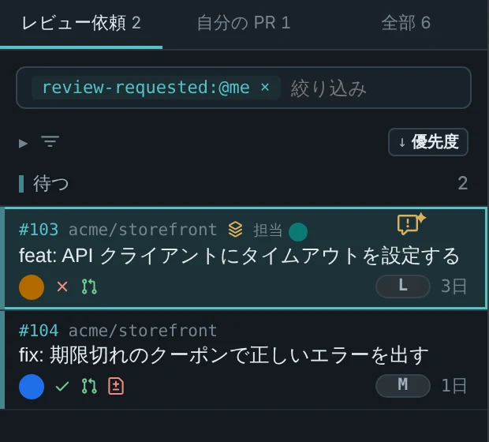
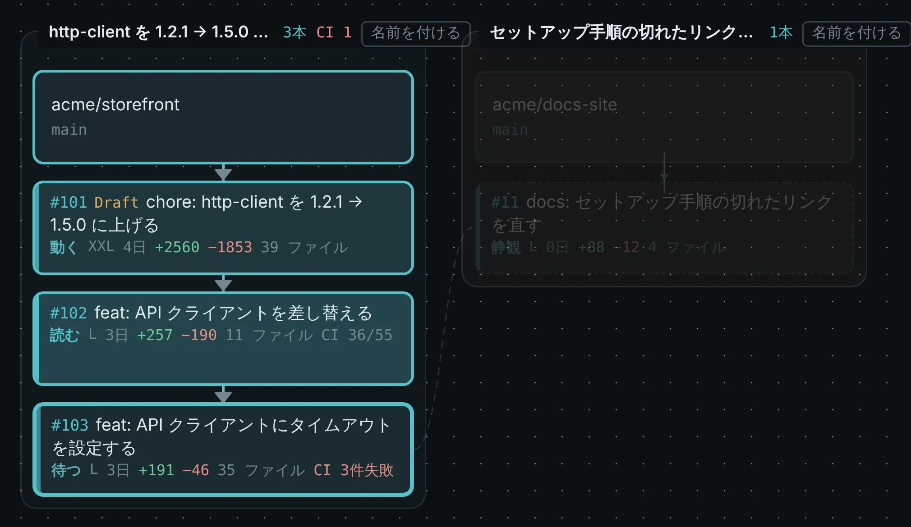
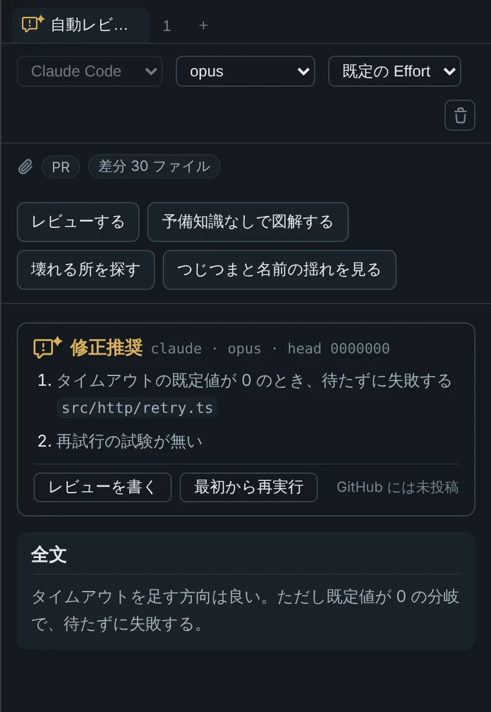

最初のレビュー
PR を選んでから、レビューを送るまでの流れです。手順はそれぞれ独立しているので、要らないものは飛ばせます。
PR を選ぶ
左の一覧には レビュー依頼・自分の PR・全部 の3つのタブがあります。
優先度で並べると 読む（自分のレビュー待ち）・動く（自分が動かす番）・待つ（ほかの人待ち）・静観（今は何もしなくてよい）に分かれます。上から開きます。

スタックの中の位置を見る
⌘G でグラフを開きます。PR の積み重なりごとに枠で囲みます。PR にポインタを重ねると、その優先度になった理由が出ます。
PR を押すとその系列が光り、#n を開く で読み始めます。

差分を読む
読み終えたファイルには Viewed を付けます。作者があとでそのファイルを変えると、Lythe が印を外して知らせます。
大きな PR では Semantic diff に切り替えて関数や型ごとに読むか、AI で並べ替え を押して AI CLI が勧める順で読みます。 Semantic diff は AI を使わず、TypeScript・Rust・Go・CSS と設定ファイルを構文で解析します。

AI に聞く
右の Chat は、PR・差分・自分のコメントを選んだ CLI に渡します。レビューする や 壊れる所を探す などの定型文から始められます。 CLI は自分のアカウントでその AI サービスへ送ります。
別の意見がほしいときは、別の CLI でタブを開き、最初の答えを渡します。

コメントしてレビューを送る
行の頭の印を押すとコメントを書けます。送るまでは下書きのまま残ります。
レビューを送信 で GitHub にまとめて送ります。承認（Approve）とマージも同じ画面からできます。
裏でレビューさせる
設定の「エージェントとプロンプト」で 自動レビュー をオンにします。Lythe を開いている間、レビューを頼まれた PR を優先度の順にレビューします。 1つの PR で CLI を何度も起動するので、利用枠を使います。
結果は Chat の 自動レビュー タブに判定つきで出ます。自分で送るまで GitHub には何も投稿しません。

自分の観点を覚えさせる
Lythe はレビューのコメントと Chat での指示をこの Mac に溜めます。50 件溜まったら、設定の「観点」で 観点を作り直す を押すと、AI CLI が観点にまとめます。
切っていない観点は Chat の問い合わせに毎回添えられるので、自分がいつも見るところを AI も見るようになります。
覚えておくと速いキー
| ⌘P | PR・ファイルへ移る |
| ⌘⇧P | 操作を探す |
| ⌘G | グラフの開閉 |
| ⌘F | 最後に押したペインの中を検索 |
| ⌃Tab | PR を切り替える |
| ⌥Tab | Chat のタブを切り替える |
| ⌘ , | 設定 |